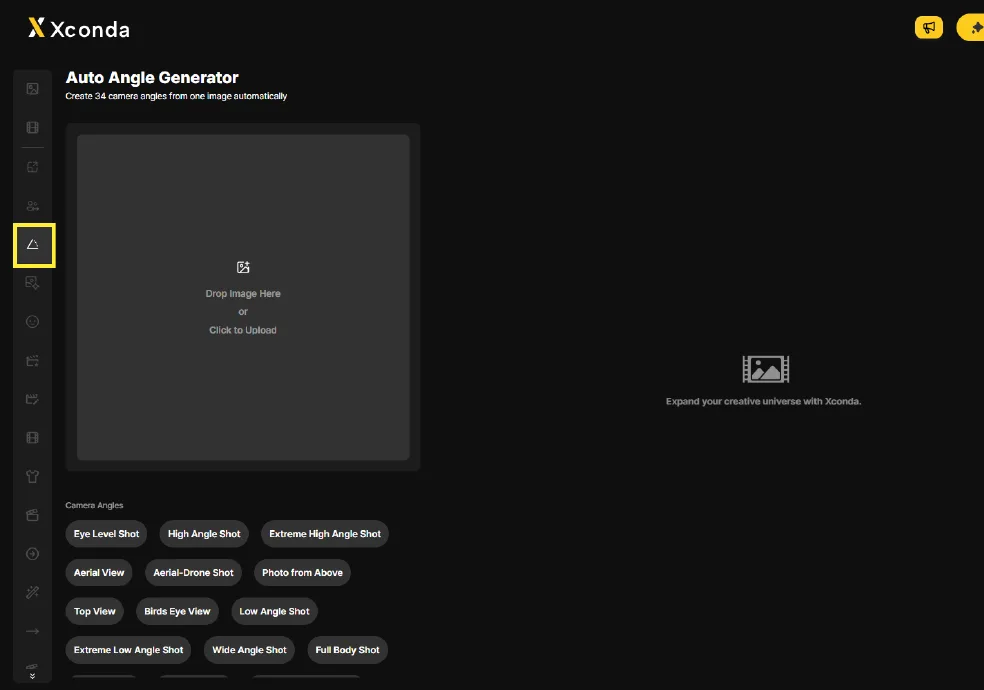
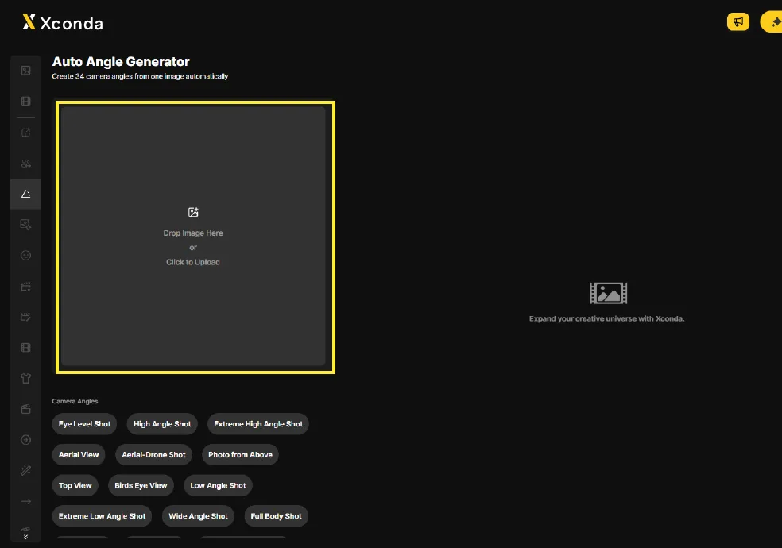
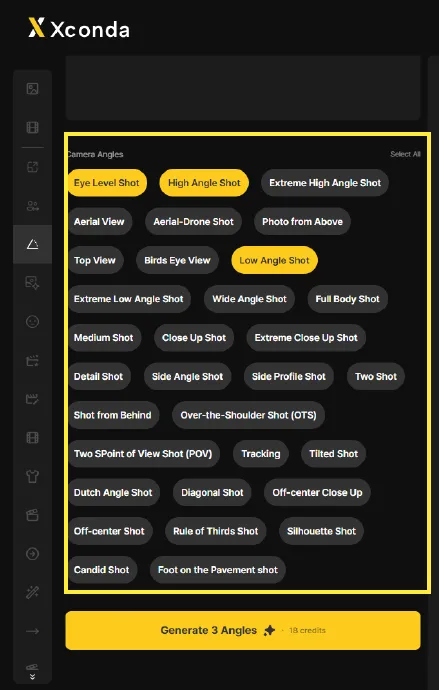
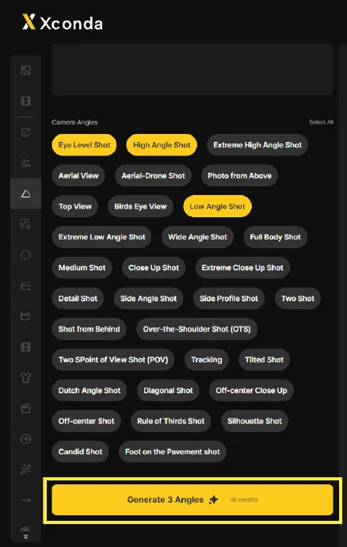
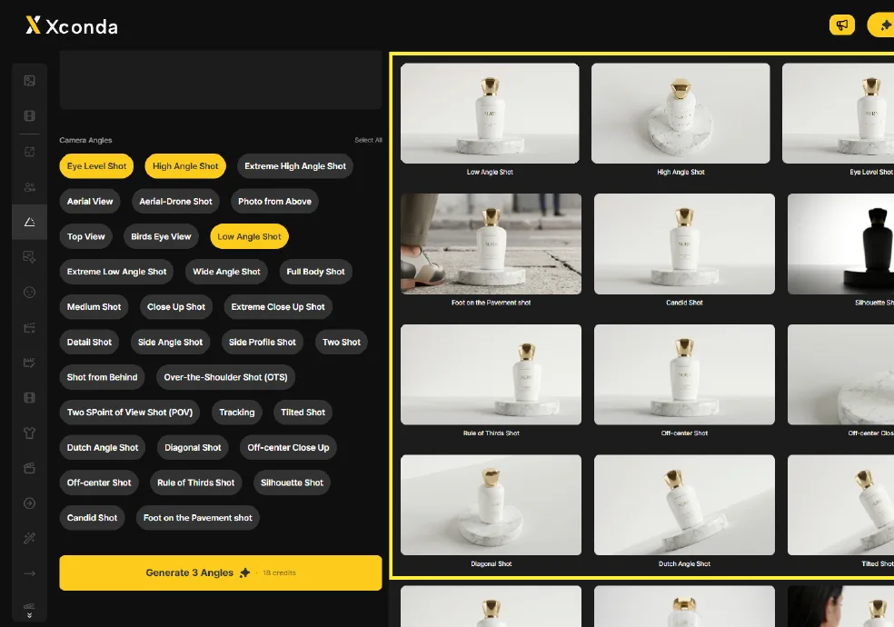
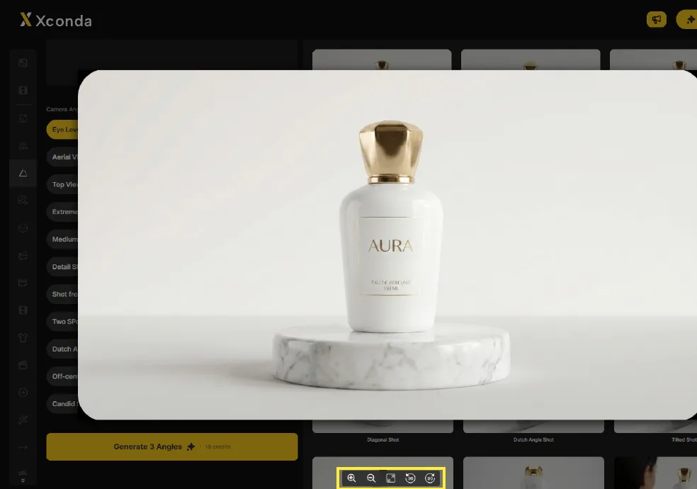
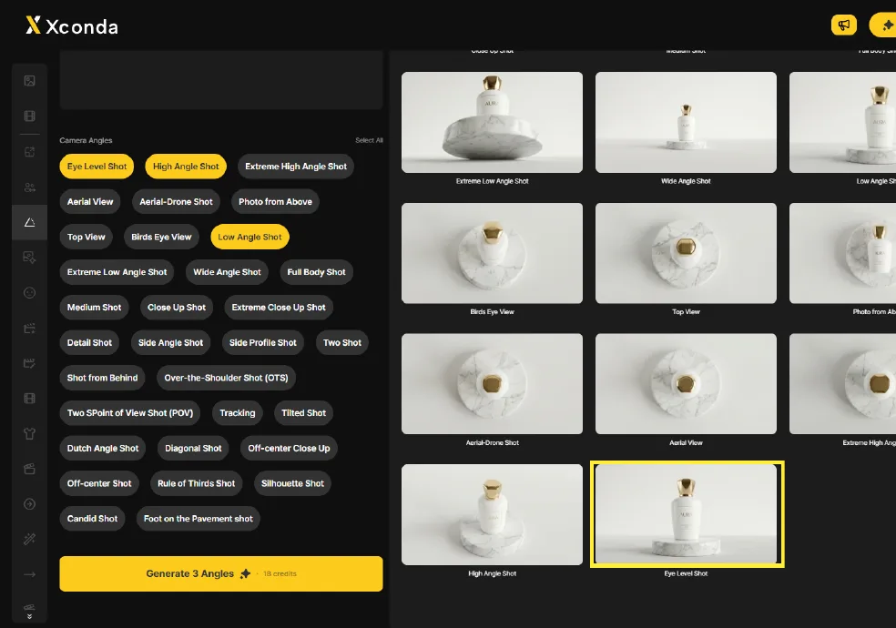

实际拍摄需要几十次重拍 —— 不断调整灯光、机位和三脚架高度。Auto Angle Generator 用一张原图取代这一过程。
实际拍摄需要几十次重拍 —— 每个变体都要调整灯光、机位和三脚架高度。
无需场地、设备或剧组，即可获得商品或角色的多角度图像。
商品摄影补充、电商详情页、lookbook / 作品集，以及企划 / 草图阶段。
把单张正面商品图扩展为俯视、仰视、侧视等构图。
用多角度商品图快速填充详情页。
把单张角色 / 服装图像转换为多个视角。
在实际拍摄前预先检查角度草图。
34 个角度选项、批量 / 单独选择、批量 / 单独生成、详情视图与下载。
可从 Eye Level、High Angle、Aerial View、Low Angle、Close Up、Side Profile 等 34 个角度中选择。
一次选中所有可用角度，或清除选择。
只生成所选角度，或一次生成全部。
点击结果可缩放 / 适应 / 旋转。每张图像都可单独下载。
为获得更高质量，原图最好满足以下条件。
白色 / 纯色背景或干净的影棚背景，角度转换准确度最高。
主体应位于画面中央。裁切过度或偏离中心的图像在转换时可能变形。
分辨率越高，质量越好。低分辨率原图会在结果中丢失细节。
建议使用正面或稍有角度的图像。极端角度可能转换得不自然。
多个主体重叠，或手部、手臂复杂交叉，都会降低转换质量。
点击左侧竖排边栏的第 5 个图标。
位于左侧竖排边栏的第 5 个图标，图标是带角度刻度的三角形。
点击图标即可打开 Auto Angle Generator 工作区。

点击上传区域选择原图。
Drop Image Here, 或, Click to Upload.
上传后会显示预览图像。

点击相机角度按钮进行选择。选中的按钮会变成黄色。
逐个点击相机角度按钮进行选择。选中的按钮会变成黄色。
Select All 可一次选中所有可用角度。点击 Deselect All 可清除选择。

可用的相机角度类型及其特征。
完成图像上传和角度选择后，点击底部黄色的 Generate Angles 按钮。
完成图像上传和角度选择后，点击底部黄色的 Generate Angles 按钮。
开始生成所选角度。

生成完成后，所选角度的结果图像会显示在右侧结果区域。
生成完成后，所选角度的结果图像会显示在右侧结果区域。
每个结果下方都会显示其角度名称。

点击结果图像即可打开详情视图。
点击结果图像即可打开详情视图，图像会放大显示。
使用底部图标可以放大、缩小、适应屏幕或旋转。

将鼠标悬停在结果图像上，即可使用单独下载和删除。
将光标移到结果图像上，会出现下载和删除图标。
点击下载图标可保存该图像，点击删除图标则将其从结果中移除。
